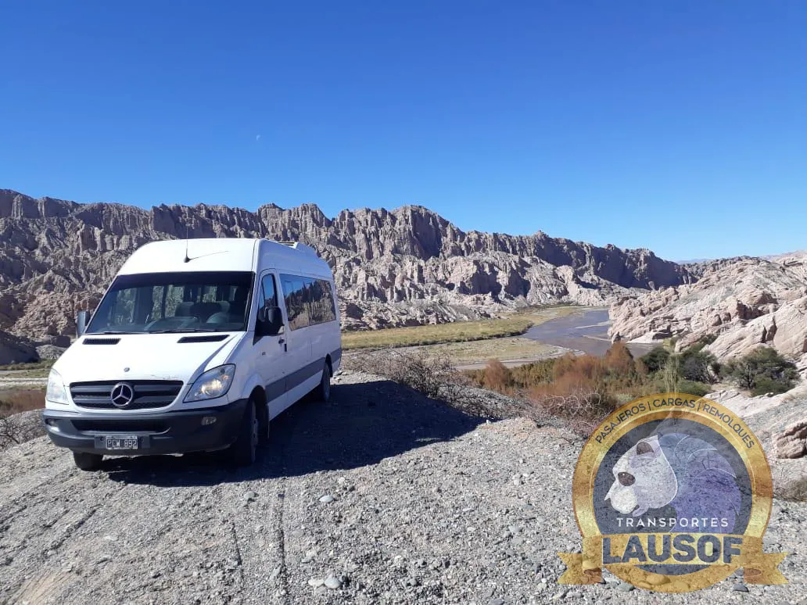

Combis para grupos de peregrinos en la Fiesta del Milagro
Cada septiembre llegan a Salta miles de peregrinos a pie, en bicicleta y a caballo desde toda la provincia y desde Jujuy, Tucumán y Catamarca. Ponemos combis de 19+1 plazas con chofer para que su grupo tenga un vehículo de apoyo en el camino, llegue a tiempo a la procesión y vuelva junto a su pueblo.
Las fechas
Novena del 6 al 14 y procesión el miércoles 15 de septiembre de 2027
La fiesta del Señor y la Virgen del Milagro tiene fechas fijas: la novena empieza el 6 de septiembre y la procesión es el 15. En 2026, la procesión salió a las 15 desde la Catedral, por España, Zuviría, la avenida Belgrano y la avenida Sarmiento.
Acompañaron la procesión del 15 de septiembre de 2026, según el Gobierno de Salta.
Llegaron a la Capital durante los quince días previos, desde distintas localidades y provincias.
Dispuso la Municipalidad para el día de la procesión de 2026, además de cortes y desvíos desde el 12 de septiembre.
Fue el período de llegada de las peregrinaciones a la Catedral en 2026, según el cronograma del Arzobispado.
Lausof SRL es una empresa de transporte independiente. No organiza la fiesta ni las peregrinaciones. El cronograma de llegada de los grupos a la Catedral lo publica el Arzobispado de Salta y los cortes de tránsito, la Municipalidad de Salta. Datos de 2026 verificados el 10/10/2026 en esas fuentes y en el sitio del Gobierno de Salta.
Quiénes llegan
Grupos que caminan días y necesitan volver
El cronograma de 2026 del Arzobispado muestra de dónde vienen los grupos y cuánto tardan. Algunos ejemplos de ese año:
Los Peregrinos de la Puna salieron de San Antonio de los Cobres el 11 de septiembre, a pie, y llegaron a la Catedral el 14: unas 10.000 personas de San Antonio, Pocitos, Olacapato y otros parajes. Según la prensa, una larga caravana de vehículos de apoyo acompañó la marcha.
De Cachi llegaron unas 7.000 personas a pie; de la Prelatura de Cafayate, unas 3.000; de Santa Victoria e Iruya, otras 3.000. También caminaron grupos de Orán, Tartagal, Embarcación y Salvador Mazza.
Hubo grupos en bicicleta, a caballo y a pie desde Santa María, Belén, Tinogasta y Antofagasta de la Sierra (Catamarca), Amaicha, Colalao y Tafí del Valle (Tucumán), y Perico y San Pedro (Jujuy).
Un grupo que caminó tres o cuatro días no vuelve caminando. Después de la procesión el centro sigue con cortes y desvíos, con miles de personas volviendo a la vez: el regreso conviene tenerlo resuelto antes de salir.
Qué hacemos
Tres maneras de acompañar al grupo
Buscamos al grupo en Salta después de su llegada a la Catedral o después de la procesión y lo llevamos de vuelta a su localidad, dentro de la provincia o a Jujuy, Tucumán o Catamarca.
Una combi que acompaña la peregrinación por tramos: lleva bolsos, agua y abrigo, y sube a quien necesite descansar. Se coordina con los organizadores del grupo y con los horarios de cada etapa.
Para parroquias, colegios y familias que no caminan: salida desde su ciudad el 15 de septiembre, bajada fuera de la zona de cortes y regreso la misma noche.
Las combis son de 19+1 plazas. Para grupos más numerosos coordinamos más de una unidad, con el mismo punto de encuentro.
El centro de Salta esos días
Dónde baja y dónde espera la combi
Del 12 al 15 de septiembre la Municipalidad corta y desvía calles alrededor de la Catedral, y el día de la procesión los cortes se extienden por todo el recorrido. La combi no puede llegar a la puerta de la Catedral: acordamos con el grupo un punto de bajada y de encuentro fuera del perímetro de cortes que publique la Municipalidad para 2027, a una distancia que se pueda caminar.
Para la vuelta, el chofer espera en ese punto. Si alguien se demora o se pierde entre la gente, el encargado del grupo nos avisa por WhatsApp y esperamos o volvemos a buscarlo.
Cómo reservar
Lo que necesitamos del encargado del grupo
Envíenos de qué localidad es el grupo, cuántos viajan, qué día llegan a Salta y qué servicio quieren: regreso, vehículo de apoyo o ida y vuelta el día de la procesión. Conviene escribir con varias semanas de anticipación: es la fecha con más movimiento del año en la ciudad.
Habla siempre con la misma persona. Emitimos factura A o B, según lo que necesite la parroquia, el colegio o la institución — somos Lausof S.R.L., CUIT 30-71146774-9.
Preguntas frecuentes
Lo que preguntan las parroquias y los grupos
¿Pueden viajar con nosotros desde Jujuy, Tucumán o Catamarca?
Sí. Tenemos habilitación CNRT interjurisdiccional (N.º 60284) para viajar entre provincias, así que podemos buscar al grupo en su ciudad o llevarlo de vuelta.
¿La combi acompaña a los peregrinos a paso de caminata?
No va pegada al grupo por la ruta: se adelanta y espera en los puntos de descanso que acuerde el organizador, para que los peregrinos tengan agua, abrigo y un lugar donde sentarse.
¿Llevan también las bicicletas de los bicigrinos?
Cuéntenos cuántas son cuando pida la cotización. Según la cantidad, vemos si entran en la unidad o si hace falta otro vehículo para la carga.
¿A qué hora volvemos el día de la procesión?
Cuando el grupo lo decida. La procesión de 2026 salió a las 15 desde la Catedral; acordamos la hora de encuentro con el encargado y el chofer espera.
Quiénes somos
Una empresa familiar de Salta
Lausof SRL hace transporte de pasajeros desde 2010 y mantiene sus combis en taller propio. Llevamos grupos de fe, casamientos y eventos dentro de Salta y a otras provincias del NOA. Conozca la empresa.


Relacionado: peregrinaciones, casamientos y eventos · viajes de estudio y salidas de colegios · combis a recitales y festivales · feriados y fines de semana largos.
Actualizado el . Las fechas de 2027 son fijas; los cortes y el cronograma de llegadas de 2027 se suman cuando los publiquen la Municipalidad y el Arzobispado.
¿Su grupo ya está organizando el Milagro?
Cuéntenos de dónde salen, cuántos son y qué día llegan a Salta. Le respondemos con la cotización en el día.